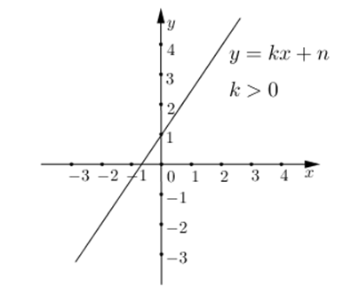
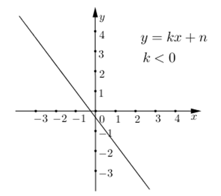
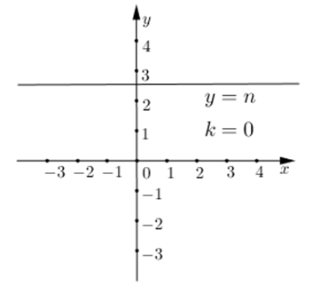

Funkcije
Funkcija je preslikavanje koje svakom elementu jednog skupa (domena) pridružuje tačno jedan element drugog skupa (kodomena). Ako funkciju označimo sa \(f\), zapisujemo: \(y = f(x)\).
Osnovni pojmovi
- nezavisna promenljiva \(\,x\,\)
- zavisna promenljiva \(\,y\,\)
- domen funkcije – skup vrednosti za koje je funkcija definisana
- skup vrednosti funkcije – skup svih vrednosti koje funkcija poprima
- vrednost funkcije \(f(x)\)
Grafik funkcije
Grafik funkcije je skup tačaka u koordinatnoj ravni čije su koordinate \((x, f(x))\).
Nule funkcije
Nule funkcije su vrednosti promenljive za koje je \(f(x) = 0\). Geometrijski, to su preseci grafa funkcije sa \(x\)-osom.
Monotonost funkcije
Funkcija može biti:
- rastuća
- opadajuća
- konstantna
Parne i neparne funkcije
- Parna funkcija: \(f(-x) = f(x)\) (simetrična u odnosu na \(y\)-osu)
- Neparna funkcija: \(f(-x) = -f(x)\) (simetrična u odnosu na koordinatni početak)
Osnovne vrste funkcija
Linearna funkcija
Linearna funkcija definisana na skupu realnih brojeva je funkcija \(y = f(x)\) određena sa:
\(y = kx + n\)
gde su k i n realni brojevi. Funkcija zapisana na ovaj način naziva se eksplicitno zadata funkcija.
- k je koeficijent pravca linearne funkcije
- n je slobodan član koji predstavlja odsečak na \(y\)-osi
Osim u eksplicitnom, funkcija može biti zadata i u implicitnom obliku:
\(ax + by + c = 0\)
Koeficijent pravca i odsečak na \(y\)-osi najlakše čitamo iz eksplicitnog oblika.
Za \(k > 0\) funkcija je rastuća i njen grafik je oblika:
Za \(k < 0\) funkcija je opadajuća i njen grafik je oblika:
Za \(k = 0\) grafik funkcije je paralelan sa \(x\)-osom, a \(y\)-osu seče u vrednosti \(n\):
Kvadratna funkcija
Kvadratna funkcija je funkcija oblika \(y = ax^2 + bx + c\), gde je \(a \ne 0\). Grafik kvadratne funkcije je parabola.
- Ako je \(a > 0\), parabola je otvorena naviše.
- Ako je \(a < 0\), parabola je otvorena naniže.
- Osa simetrije parabole je prava \(x = -\frac{b}{2a}\).
- Teme parabole je tačka \((-\frac{b}{2a},\ f(-\frac{b}{2a}))\).
- Nule (ako postoje) dobijamo rešavanjem jednačine \(ax^2 + bx + c = 0\).
Kalkulator: tabela i grafik (linearna funkcija)
Unesi k i n za y = k·x + n, pa pogledaj tabelu i jednostavan graf.